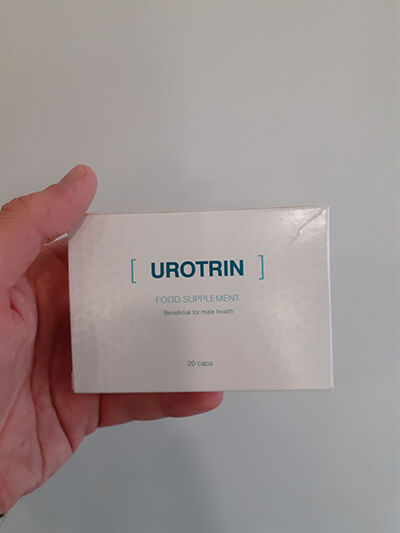
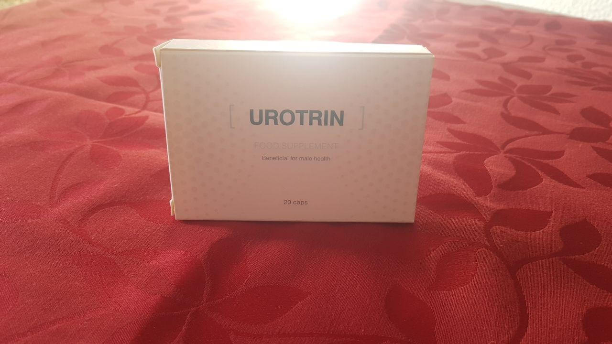

Magyarországon prosztatagyulladásban több ember szenvedett, mint Covid-19-ben
A prosztatagyulladás a férfiak 62%-nál van jelen. A fele közülük pedig
nem is tud a probléma meglétéről, amíg késő nem lesz
David Levy – ismert urológus, egy kutató központ vezetője a Ben-Gurion Egyetemen (Izrael), egy a prosztata funkciók természetes helyreállítási módszerének megalkotói közül, a "Férfiegészség" enciklopédia társszerzője.
Prosztatagyulladás – nagyon kellemetlen betegség, amely minden férfira vár. De ma olyan könnyen kezelhető, mint az egyszerű nátha. És káros eljárások, gyógyszertári tabletták és orvosi konzultáció nélkül. De Magyarország erősen le van maradva az urológia fejlődésében, habár úgy gondolom, hogy az önök orvosainak egyszerűen megtiltották olyan szer ajánlását, amely kikezeli a prosztatagyulladást egyszer és mindenkorra és olcsóbb, mint egy mozijegy. A gyógyszeripar számára ez nem jövedelmező.
Legyenek okosabbak és nézzék meg Izrael, valamint Svájc tapasztalatát – ott nem maradt több férfi, aki prosztatagyulladásban szenved. Kérdezze meg ezen országok bármelyik urológusát és közülük mindannyian ajánlani fogják az vitamin kiegészítőt – ez természetes növényi szer, amely hatékonyabb bármelyik gyógyszertári analógnál.
Megdöbbent az, ahogy orvosaik ehhez a problémához viszonyulnak. Tudta, hogy a prosztatagyulladást a merevedési zavarok leggyakoribb okának tekintik? Emiatt a spermiumok aktivitása csökken, az erekció gyengül és korai magömléssel kapcsolatos problémák jelennek meg. Ezért ha szexuális életének minősége látható okok nélkül csökkent – legelőször a prosztatagyulladást kezelje.
De a problémák az ágyban – nem a legrosszabb, ami történhet. Időszerű terápia nélkül a prosztata gyulladása adenómához, urethritishez, phimosishoz, Peyronie-betegséghez és a férfiak meddőségéhez vezet.
EXKLÚZÍV! Interjú Paul Harris világhírű urológussal, az feltalálójával
Paulnak mindössze egy kérdést tettünk fel: hogyan sikerült olyan felfedezést tennie, amely az elmúlt 100 év legfontosabbja lett az urológiában?
Valójában ennek az elég intim problémának a megoldására már régóta rátalált a természet. Mi csupán a megfelelő arányban válogattuk össze az alkotóelemeket. Az szer azért egyedülálló, mivel 100% természetes az összetétele, amely teljesen felszívódik a szervezetben és nincsenek mellékhatásai.
Megtisztított áfonya kivonatot vettünk alapul, amelyet a 18. század óta használnak gyógyászati célokra. E növény gyümölcsei gazdagok K-vitaminban és proantocianinokban, amelyek nemcsak csökkentik a prosztata gyulladását és duzzanatát, de meg is védik az új baktériumoktól
De a probléma az, hogy a prosztatagyulladást az urogenitális rendszer vérellátásának romlása jellemzi. Normális vérkeringés nélkül bármely orális szer hatékonysága minimálisra csökken. Ezért a szer összetételét egy másik természetes összetevővel – kamilla kivonattal erősítettük, amely oxigénnel és vitaminokkal látja el az urogenitális rendszert.
Sajnos a prosztatagyulladásban szenvedők 70%-a intim problémákat tapasztal, egészen a teljes impotenciáig. Sőt mi több, a prosztata fertőzése vagy gyulladása a merevedési zavarok leggyakoribb okának számít. A helyzet az, hogy a prosztatagyulladás miatt a férfiaknál csökken a tesztoszteron termelés. És a természetben csak egy anyag van, amely képes megbirkózni ezzel a problémával – fenyő kivonat.
Megfelelő arányban összekevertük ezeket az összetevőket és egy 200 emberből álló csoporton vizsgálatot végeztünk. De az első eredmények csalódást okoztak – a szer hatékonysága csak 32% volt, ami alacsonyabb, mint a gyógyszertári analógoké. De aztán sikerült valódi áttörést elérnünk - csalán kivonatot adtunk az összetételhez. Ez az összetevő nemcsak stimulálja a tesztoszteron termelést, hanem szinergiába lép más komponensekkel, vagyis növeli kölcsönhatásuk erősségét. A csalán pontosan az az elem lett, amelyre szükségünk volt

És ezek csupán a főbb alkotóelemek. Az összetétel dúsított még hat aminosavval, magnéziumsóval és mikrokristályos cellulózzal. Növelik a kezelés hatékonyságát, felgyorsítják a felépülést és egyben természetes tartósítószerek is.
Teszt a prosztatagyulladás azonosítására
Spóroljon pénzt az urológusnál tett látogatáson. Tudja meg, van-e prosztata problémája és hogyan kezelheti otthoni körülmények között. A tesztet az amerikai Közegészségügyi Intézet fejlesztette ki és 8 kérdésből áll. Minden válasz mellett meg van adva a pontok száma, amelyeket a diagnózis és a tanácsok megszerzéséhez össze kell adni:
Kérdés 1 / 8
Tapasztalt-e fájdalmat az utóbbi hónapban ezeken a területeken:
Milyen gyakran tapasztalt fájdalmat a felsorolt területeken az elmúlt 4 hétben:
Az elmúlt hónapban érzett-e ilyen kellemetlenséget
Milyen gyakran kell gyakrabban vizelnie, mint egyszer két órában:
Ha érez fájdalmat vizeletürítés során, értékelje azt
Milyen gyakran érzi a hólyag telítettségét (nyomást) kis mennyiségű vizelésnél
Tapasztalt-e fáradtságot még jó alvás után is?
Hogyan változott szexuális aktivitásának minősége az utóbbi fél évben?
A kérdőiv kielemzéséhez adja össze a szerzett pontokat és vesse össze őket az urológus tanácsaival:
- 0 és 8 pont között. Nincs szükség kezelésre, megelőzésként csinálja végig az alap kúráját évente egyszer.
- 8 és 20 pont között. Vannak jelei a krónikus prosztatagyulladásnak. Folytatni kell az alap terápiás kúrát a teljes gyógyulásig (általában elegendő két kúra).
- 20 pontnál több. Önnek sürgősen el kell kezdenie az kiegészítő gyógykúráját és erre az időre fel kell hagyni a nemi aktussal. Ne halogassa a kezelést, különben a here szervének gyulladása, akut vizeletretenció és impotencia fenyegeti.
P.S. szer alapkúrája 10 nap. A kúrák közt 4 napos szünetnek kell lenni.
vizsgálati eredményei
Az USA Országos Egészségügyi Intézete (National Institutes of Health) nagyszabású vizsgálatot végzett a prosztatagyulladás elleni szerekről. A klinikai vizsgálatban 14800, különböző prosztata megbetegedésben szenvedő férfi vett részt.
A résztvevőket két csoportra osztották: az elsőnek gyógyszertári szereket adtak az orvos előírásai szerint, a másik csak kiegészítőt szedett. Az eredmény minden várakozást felülmúlt:
Gyógyszertári készítmények hatékonysága
8%
46%
62%
23%
9%
32%
51%
szer hatékonysága
91%
100%
98%
72%
89%
97%
98%
Klinikailag bizonyított, hogy az kiegészítő háromszor hatékonyabb, mint bármely gyógyszertári készítmény, beleértve a komplex gyógyszeres terápiát is. Az eredményeket más orvosi vizsgálatok is megerősítik, köztük a Ben-Gurion Egyetemen (Izrael) végzett.
FONTOS! Múlt héttől az többé nem kapható gyógyszertárakban
A piacon sok hamisítvány jelent meg, ezért a gyártó kénytelen volt bevonni a termék egész tételét a gyógyszertári láncokból. Most a kiegészítő a prosztata kezelésére megszerezhető a hivatalos megrendelői lapon keresztül online. Felvettük a kapcsolatot a gyártóval, aki beleegyezett egy exklúzív akció lebonyolításába olvasóink számára: az első akár 50% kedvezmény kisorsolása. Ajánlat érvényes -ig.

Tibor, Ön olvasta egyáltalán a cikket vagy csak a képet és a feliratot látta
meg és rögtön valamilyen következtetést kezdett el levonni? Ott világosan
le van írva, hogy ez ideiglenes akció, speciális.
Igen, tényleg . Én személy
szerint egy órája rendeltem meg. Természetesen rögtön egy kúrát
rendeltem, hogy az eredményt rögzítsem örökre.
Úgyhogy
mielőtt valamit írna, fogja fel a lényeget.

Egy vagyok azok közül, akik már megrendelték az "" szert és már érkezték tesztelni. Tényleg nagyon kiválóan segít. A potencia szinte 10 perccel a bevétel után megjelenik. Erős. De leginkább az tetszett, hogy kumulatív hatása van. Vagyis minél gyakrabban szeded, annál jobb. Már elkezdett megjelenni a reggeli erekció. Nagyon régen nem volt. Szóval, mindenkinek ajánlom kipróbálni.


A férjemnek kell rendelni ilyet. Az utóbbi 2 évben a szexet meg lehet számolni az ujjaimon. Már nem tudom, mit csináljak. Mindössze 49 éves. Ismerek olyan férfiakat, akik ebben a korban még ohohó.
Teljesen megerősítem! "" – kiváló készítmény. Nekem 3 évig voltak potencia problémáim. Családi problémák kezdődtek, majdnem válás lett a vége. De végülis minden megoldódott, a potencia helyreállt. Most minden normálisan működik és akkor, amikor kell)))

Hallottam az "" szerről. Egyáltalán nem olcsó. Itt pedig . Valahogy nem is hiszem, de úgy gondolom, megrendelem próbaképp.
Antal, ez célzott program és a készítményt áron terjesztik. Ez az akció csak -ig lesz érvényes. Úgyhogy rendeljen gyorsabban.

Antal, rendeld meg és ne aggódj. Megerősítem, az emberek is írták fentebb, és az orvos is megerősítette. Még ha nincsenek is különösebb problémák, a szex kétszer jobb lesz. Személyes tapasztalaton ellenőrizve.
Béla, igen már megrendeltem. Köszönöm a tanácsot. Ki fogom próbálni.

A férjemnek is voltak problémái. Ő maga is szenvedett, de ahogy gondolják, én is. Vásároltunk a gyógyszertárban egy csomó különböző készítményt, velük pedig egy nagy csomó mellékhatást. A fejfájás állandó jellegű volt, allergiás reakciók, mindenütt viszketett. Még hogy "természetes összetevőkből", ostobaság. Mi is megrendeltük ezt a készítményt, csupán pár napja jött meg és már észrevehető a javulás. Óriási hála ezért az akcióért!
Marianna, nincs szükség hálálkodásra. A gyógyszertárakban pedig manapság egyáltalán nincs lehetőség semmi normálisat vásárolni. Arról a Viagráról is minden le van írva a cikkben.

A készítmény bombasztikus! Még ha összehasonlítjuk olyan eredeti szerekkel, mint a Viagra. Kőkemény a merevedés. Mi a feleségemmel éjszakánként most már egyáltalán nem alszunk. Értik miről beszélek...)))
Megrendeltem. Megígérték, hogy 5 nap múlva átvehetem a postán. Kényelmes, amikor a kiszállítás ilyen gyors. Most pedig , miért ne próbáljam ki.
Elbúcsúztam a merevedési zavartól egy hónap alatt. Mindenkinek ajánlom. Az egyetlen szer, amely igazán segít.
Magabiztosan mondhatom, hogy az "" készítmény nagyon jó. Mi a férjemmel nem csak az új érzések miatt rendeltük, hanem mert nagyon komoly problémánk volt. Fájdalmai voltak, az intim életről pedig egyáltalán nem fogok beszélni. Egy hónapja rendeltük, mindössze 3 nap alatt megérkezett. És most bátran jelenthetem ki, hogy az "" kiváló szer. A férjemmel minden rendben van, és így a családban is. Köszönöm.

Igen, hogy mi az a fájdalom a herezacskóban, nem hallomásból tudom. Magam estem át ezen. Köszönöm Önnek ezt az akciót és a cikket. Az "" igazán remek készítmény.
Nagyon köszönöm a linket. A férjem nagyon szenved. Emiatt csökkent az önbizalma és valahogy állandóan panaszkodik. Nagyon szeretem a férjem, hajlandó vagyok az életemet adni érte. "" megrendelve. Minden remény benne van.
Irén, ne kételkedjen, az "" biztosan segít. A klinikai vizsgálatok egyszerűen elképesztő eredményeket mutattak.

Köszönöm, az "" nagyon gyorsan segített! Pont a gyártó hivatalos weboldalán rendeltem. Ne halogassák a kezelést, jobb megszabadulni ezektől a problémáktól most, mint megvárni amíg mindez komolyabb következményekhez vezet.


Csodálatos szer. Köszönet a férjemért. Ő maga nem fog írni, szégyellné. Nagyon hálásak vagyunk Önnek ezért az akcióért és azért, hogy egyáltalán megalkotott egy ilyen szert. Ön sokat segít az embereknek.
Mondják meg, kérem, hogyan rendelhető meg. Valahogy nem tudok rájönni. A férjemnek problémái vannak, már szenvedtünk eleget.
Az eredeti "" szert CSAK a hivatalos weboldalon lehet megrendelni, hogy ne hibázzon, egyszerűen kattintson a fenti linkre! Speciálisan, a célprogram keretein belül, a készítményt áron terjesztik, de -ig lesz érvényes, úgyhogy siessen a rendeléssel! És kérem, óvakodjon a hamisítványoktól.

''" - kiváló szer. Plusz még kedvezmény is jár a készítményre. Emberek, rendeljék meg, amíg készleten van.


Komolyan? ? Mi ez a készítmény?